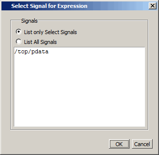

Configuring New Line Triggering
You can set new line triggering on a signal-by-signal basis or for the whole simulation. To set for a single signal, choose from the List window menu bar (when the window is undocked) and select the Triggers line setting. Individual signal settings override global settings.
To modify new line triggering for the whole simulation, choose from the List window menu bar (when the window is undocked), or use the configure command. When you choose , the Modify Display Properties dialog appears:
The following table summaries the triggering options:
Option |
Description |
|---|---|
Deltas |
Choose between displaying all deltas (Expand Deltas), displaying the value at the final delta (Collapse Delta). You can also hide the delta column all together (No Delta), however this will display the value at the final delta. |
Strobe trigger |
Specify an interval at which you want to trigger data display |
Trigger gating |
Use a gating expression to control triggering; refer to Using Gating Expressions to Control Triggering for more details. |
Using Gating Expressions to Control Triggering
Trigger gating controls the display of data based on an expression. Triggering is enabled once the gating expression evaluates to true. This setup behaves much like a hardware signal analyzer that starts recording data on a specified setup of address bits and clock edges.
Here are some points about gating expressions:
Gating expressions affect the display of data but not acquisition of the data.
The expression is evaluated when the List window would normally have displayed a row of data (given the other trigger settings).
The duration determines for how long triggering stays enabled after the gating expression returns to false (0). The default of 0 duration will enable triggering only while the expression is true (1). The duration is expressed in x number of default timescale units.
Gating is level‑sensitive rather than edge-triggered.
Trigger Gating Example Using the Expression Builder
This example shows how to create a gating expression with the Questa SIM Expression Builder. Here is the procedure:
Select the signal in the List window by clicking on its name in the header area of the List window.
Undock the List window.
Choose Tools > List Preferences from the List window menu bar and select the Triggers tab.
Click the Use Expression Builder button.
Figure 3. Trigger Gating Using Expression Builder
Click the Selected Signal button to open the “Select Signal for Expression” dialog box.
Figure 4. Select Signal for Expression Dialog BoxClick the “List only Select Signals” radio button.
Click the desired signal to highlight it.
Click the OK button to close the Select Signal for Expression dialog box and enter the name of the selected signal into the Expression field of the Expression Builder.
In the Expression Builder, click the 'rising button.
Click OK to close the Expression Builder.
You should see the name of the signal plus "rising" added to the Expression entry box of the “Modify Display Properties” dialog box.
Click OK to close the dialog box.
If you already have simulation data in the List window, the display should immediately switch to showing only those cycles for which the gating signal is rising. If that is not quite what you want, you can go back to the expression builder and adjust it until you get it the way you want it.
If you want the enable signal to work like a “One-Shot” that would display all values for the next, say 10 ns, after the rising edge of enable, then set the On Duration value to 10 ns.
Trigger Gating Example Using Commands
The following commands show the gating portion of a trigger configuration statement:
configure list -usegating 1
configure list -gateduration 100
configure list -gateexpr {/test_delta/iom_dd'rising}
Refer to the configure command description in the Command Reference Manual for details.
Sampling Signals at a Clock Change
You easily can sample signals at a clock change using the add list command with the -notrigger argument. The ‑notrigger argument disables triggering the display on the specified signals. For example:
add list clk -notrigger a b c
When you run the simulation, List window entries for clk, a, b, and c appear only when clk changes.
If you want to display on rising edges only, you have two options:
Turn off the List window triggering on the clock signal, and then define a repeating strobe for the List window.
Define a "gating expression" for the List window that requires the clock to be in a specified state. See above.